Test platforms built and commissioned, and the experimental programmes run on them.
Most of this work took place on the VT–FRA Roller Rig at the Railway Technologies Laboratory, and each
programme targeted a measurement the field had been inferring rather than observing.
Expansion of a single-wheel contact rig into a single-axle test platform
I led the expansion of an existing single-wheel contact rig into a single-axle platform capable of
testing a full wheelset. The work was hardware-first: specifying servo motors and drives and integrating three new
motion axes into the rig's existing control architecture — the bridge between the drives and the
control model —
developing and implementing the lab safety protocols (STO, E-Stop, RTO) to meet operational
standards, and stress-testing and calibrating a custom PCB for wheel instrumentation to validate
signal integrity under operational loads.
The result is a platform that reproduces curving conditions under controlled longitudinal,
lateral, and spin creepage, with force and displacement measurement traceable enough to support
sponsor deliverables. Commissioning included establishing repeatability across runs and documenting
the test procedures other researchers now use on the rig.
Servo drive and motion axis specification, integration, and tuning.
Lab safety protocol development and implementation: STO, E-Stop, RTO.
Custom wheel-instrumentation PCB stress-tested and calibrated for signal integrity under load.
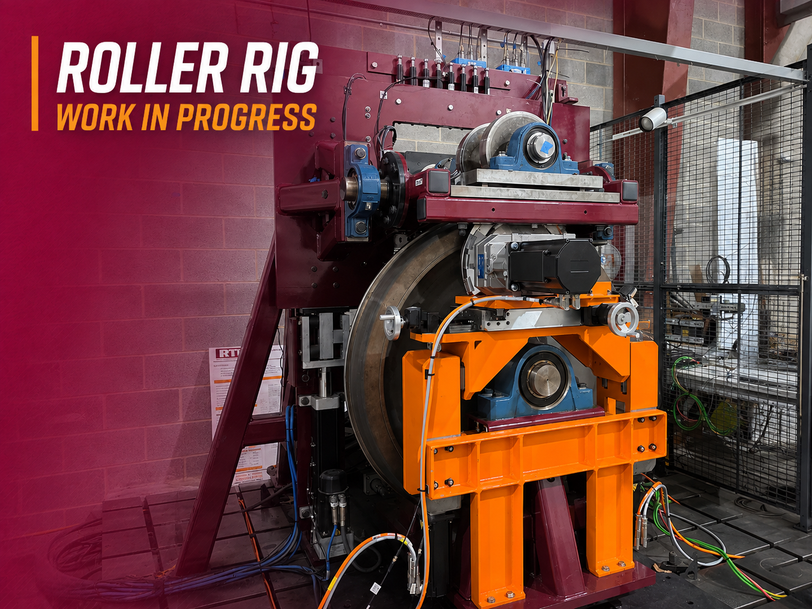
Single-axle roller rig
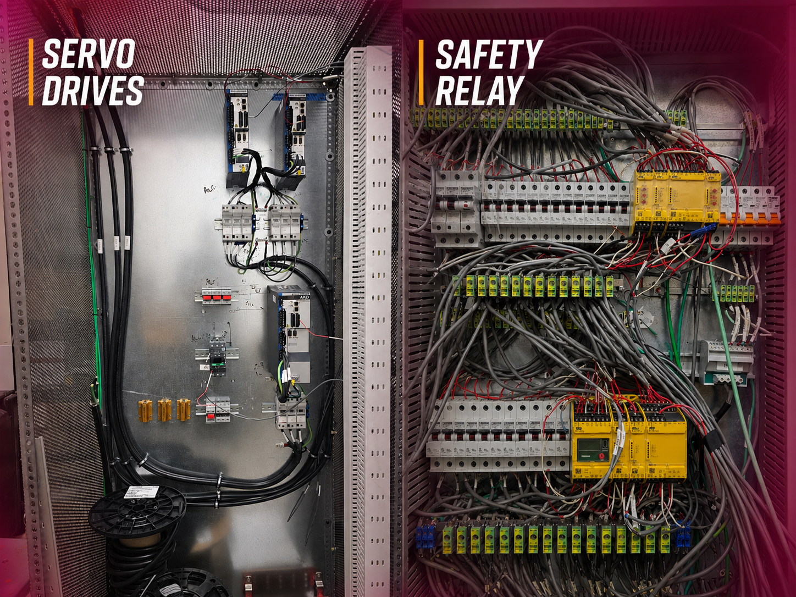
Drive and control cabinet
Related design evaluation published in Designs, 9(4), 99, 2025.
Dynamic conformal wheel–rail contact testing under controlled creepage
The first experimental programme to systematically investigate dynamic conformal wheel–rail
contact under controlled longitudinal, lateral, and spin creepage. Curving scenarios of this kind
are conventionally addressed through simulation alone; these tests reproduce them on the VT–FRA
Roller Rig and measure the result.
Longitudinal and tangential tractive forces were recorded as contact migrated from the tread into
high-contact-angle regions under varying angle of attack and cant angle. The resulting dataset shows
how force orientation, saturation, and creep force redistribution behave in conformal contact —
giving non-Hertzian contact models and derailment analyses a direct experimental reference.
First experimental investigation of dynamic conformal contact under mixed creepage.
Longitudinal and tangential traction quantified at high contact angles.
Validation data for advanced wheel–rail contact simulation.
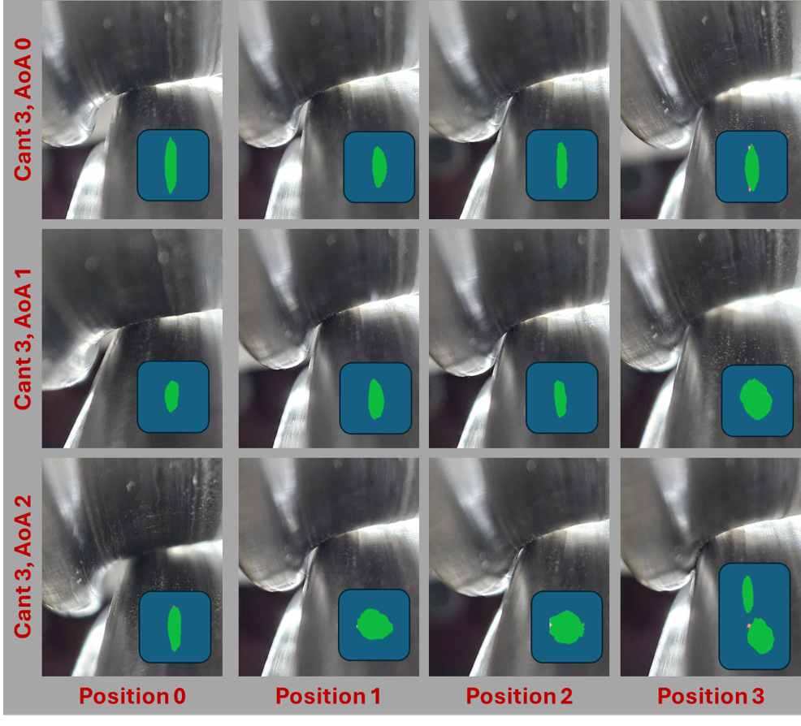
Wheelset under test
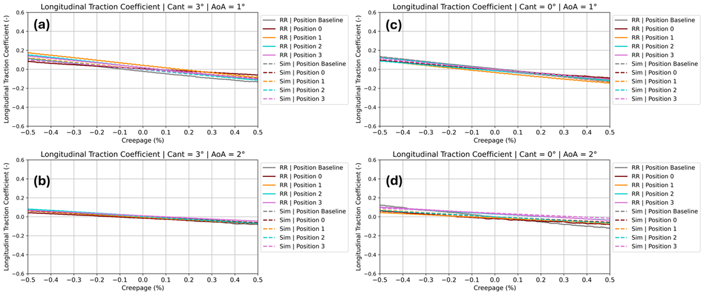
Traction force data
03 / Doctoral
Contaminant layers Loss of braking Traction measurement Roller rig experimentation
Traction-reducing agents at the wheel–rail interface
Structured experimental protocols evaluating how solid and liquid contaminants degrade tractive
force at a loaded contact. The principal case was leaf matter, a recurring cause of autumn braking
loss, applied in controlled quantities and tested under longitudinal and lateral creepage.
The programme measured how a third-body layer changes effective friction, creep force
orientation, and the creepage at which traction saturates — the parameters that set braking distance
and derailment margin. Findings were delivered to the Federal Railroad Administration.
Repeatable contaminant application and measurement protocol.
Traction coefficient and saturation behaviour quantified under controlled creepage.
Direct implications for loss of braking and stopping distance.
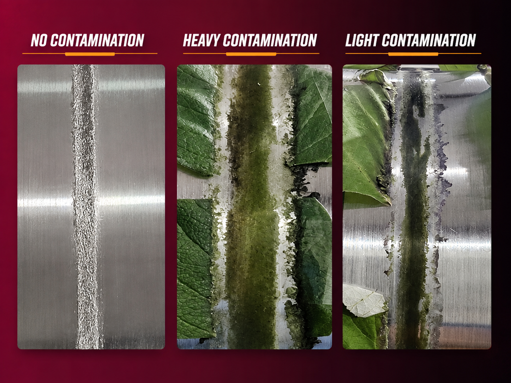
Leaf layer application
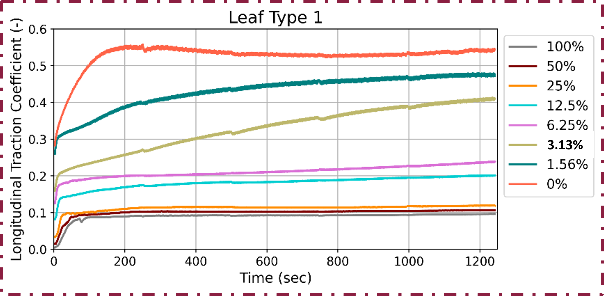
Traction drop measurement
Published in Machines, 12(5), 301, 2024.
04 / Doctoral
Friction modifiers Magnetite and alumina Traction recovery Adhesion control
Traction-enhancing agents at the wheel–rail interface
The counterpart study: how engineered materials applied to a degraded contact restore available
traction. Magnetite and alumina were evaluated as friction modifiers under the same controlled
creepage conditions, so the recovery could be measured against the loss directly rather than
compared across separate test campaigns.
The work established how much traction each material returns, at what creepage, and how the
particle layer alters force orientation at the interface — the evidence a traction-control decision
actually needs.
Comparative evaluation of magnetite and alumina as friction modifiers.
Traction recovery quantified against a degraded baseline.
Longitudinal and tangential force behaviour under dynamic creepage.
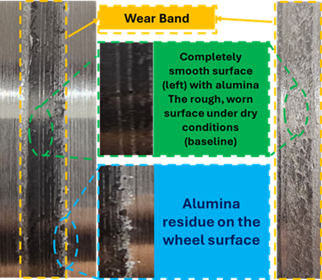
Friction modifier applied
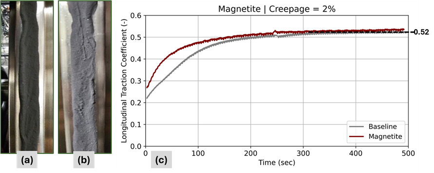
Traction recovery curve
Published in International Journal of Rail Transportation, 1–19, 2025.
05 / Doctoral
Wear modelling Sequential quadratic programming Modified Archard law Experimental validation
Wear rate optimisation on a modified Archard law
An optimisation study minimising modelled wear rate at a loaded contact, formulated on a modified
Archard wear law and solved using sequential quadratic programming. The point was not the optimiser
but the coupling: a wear model is only as good as the contact conditions fed into it, and those came
from measured rather than assumed inputs, using JMP-based design of experiments across multiple
degrees of freedom.
The resulting optimum was validated against baseline testing on the VT–FRA Roller Rig and showed
a 95% reduction in modelled wear rate — the validation step being what separates a plausible model
from a usable one.
Wear model formulation and constrained numerical optimisation.
Experimentally measured contact conditions as model inputs.
95% reduction in modelled wear rate, validated against baseline testing.
06 / Doctoral
Conformal contact Two-point contact Pressure-sensitive films Contact patch geometry
Static conformal and two-point contact characterisation using pressure-sensitive films
An experimental characterisation of static wheel–rail contact under conformal and two-point
conditions, using ultra-low sensitivity pressure-sensitive films on the VT–FRA Roller Rig to capture
contact behaviour beyond classical Hertzian assumptions.
The method allowed direct measurement of contact patch area, geometry, and pressure distribution
across varying cant angles, lateral positions, and angles of attack. Those measurements identified
flange and throat contact behaviour, supported validation of non-Hertzian models, and established
experimentally grounded contact locations for the dynamic traction studies that followed.
Conformal and two-point contact patches visualised experimentally.
Contact area, geometry, and pressure distribution quantified.
Validation support for non-Hertzian wheel–rail contact models.
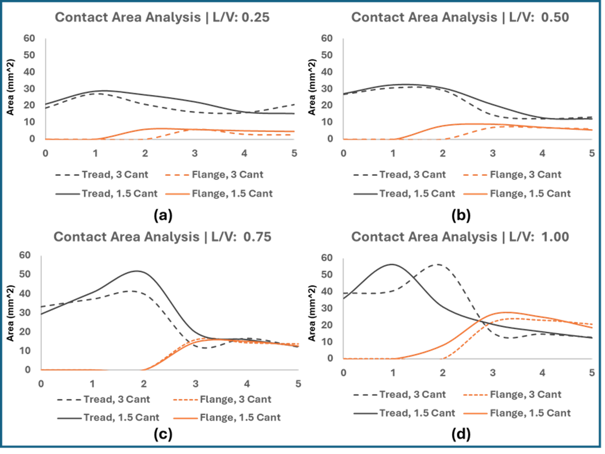
Pressure film contact patch
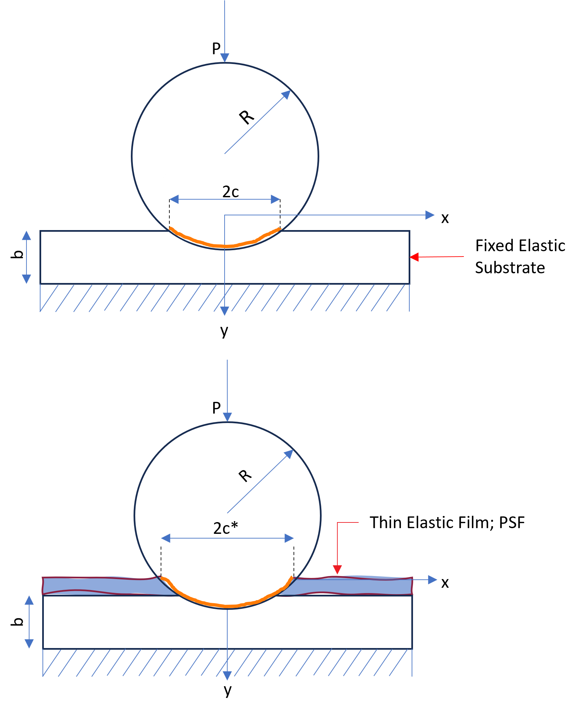
AAR2A profile setup
Portions presented at the AREMA 2024 Annual Conference, Louisville, KY.
Non-contact rail wheel defect diagnostics using air-coupled ultrasonic acoustic emission
Conducted with MxV Rail, this project experimentally validated a non-contact framework for
detecting structurally significant wheel defects using air-coupled ultrasonic acoustic emission.
The approach dispenses with liquid couplants and functions at operationally relevant stand-off
distances.
My contribution centred on the design and execution of controlled laboratory and field
experiments — instrumented impact testing, sensor placement optimisation, and repeatable data
acquisition to establish physics-based ground truth. Those measurements supported identification of
defect-specific acoustic signatures and the multi-class diagnostic modelling built on top of them.
Controlled experimental validation of air-coupled UAE measurements.
Experimental basis for automated diagnostic modelling.
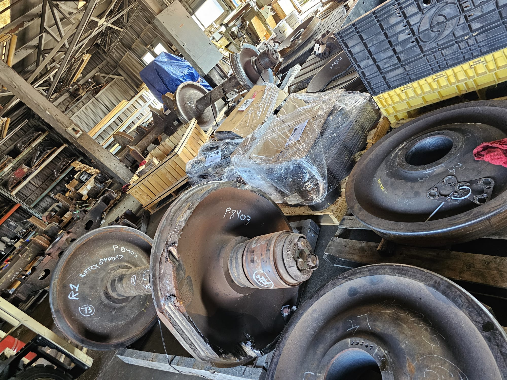
Air-coupled sensor arrayAcoustic signature
Published in Sensors, 25(19), 6126, 2025.
Research directions
Where this goes next
Three connected questions about load-bearing components: how they wear, how to detect
damage before it matters, and when to intervene.
Contact mechanics and tribology
How load-bearing interfaces wear and fail, and how material, surface engineering, coating, and
geometry choices change that outcome at the source. The mechanics that governs a wheel on a rail
also governs bearings, gears, and brakes.
Non-destructive defect detection
Finding cracks and flaws in critical components before they cause failure, extending passive
acoustic and ultrasonic sensing to a broader class of loaded parts through accessible sensing and
signal-analysis methods.
Predictive maintenance
Combining sensor data with physics-based wear and failure models to estimate remaining component
health, turning measured signals into a decision about when to act rather than a report on what
already broke.